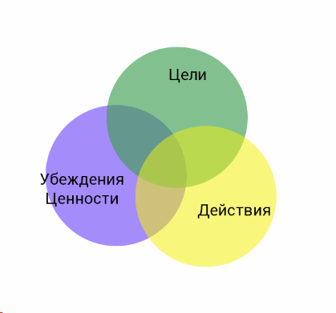

Магия языка (только начало, разобрали ф.я. - намерение)
14 фокусов языка
рабочих фокусов: 2,3,4
Убеждения - Цели - Действия

1. Если человек спорит с нами, надо согласиться!!!
2. Затем, фокус языка.
3. И на последок предлагаем добрый Совет (Внушение, Решение) ("Поживи с этим")
Добрый совет
Книга "Структура Магия" Ричард Бендлер
Убеждения бывают:
Фокус языка делает:
Упражнение:
Выписать ограничивающие убеждения.
"Есть правда мира, и это меня ограничивает"
1. Интересными могут быть только трудные задачи, поэтому я быстро остываю.
2. Новое дело открыть сложно, поэтому я занимаюсь тем, что знаю.
3. Мы в ответе за тех кого приучили, поэтому я сохраняю дистанцию с людьми.
4. Без высшего образования невозможно быть успешным, поэтому внушаю сыну его получить.
5. Чтобы заснуть нужно поесть, поэтому ем на ночь (ночная жрица)
Намерение
Какое намерение стоит за высказыванием человека?
За любым действием или высказыванием стоит позитивное намерение!
Узнать, что хорошего хочет этот человек?
"Если я учавствую в переговорах, я уже в выигрыше, в худшем случае найду товарища в качалку"
Ты наверное хочешь...
Невербальные маркеры
Голова наклонена, верхняя часть тела подается вперед, движение рук или руки вперед с открытием ладоней направленно к середине грудной клетки, к которому обращаются (метафорично - "игра в тенис").